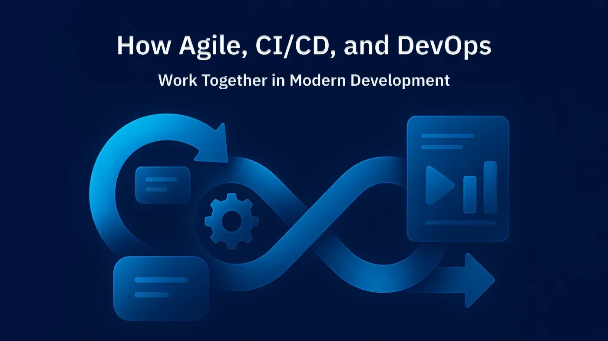
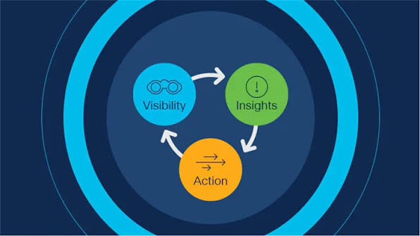

Cloud Migration
Zero-downtime migration to AWS, Azure, or GCP — full cost modelling, network redesign, and 90-day hypercare as standard.
AWSAzure
GCPTerraform
Prodesk IT engineers the cloud infrastructure, security posture, and DevOps pipelines that keep enterprise operations running at full velocity — 24 hours a day, across every region.
Trusted by industry leaders worldwide
From bare-metal to serverless, we engineer the digital backbone your organisation needs to operate at scale — and stay there.
Zero-downtime migration to AWS, Azure, or GCP — full cost modelling, network redesign, and 90-day hypercare as standard.
24/7 SOC-as-a-service with zero-trust network architecture and compliance — ISO 27001, SOC 2 Type II, and GDPR.

Kubernetes orchestration, GitOps pipelines, and platform engineering — ship confidently 40× a day.
SD-WAN design, data centre interconnects, and global load balancing — sub-10ms latency across all regions.

Full-stack monitoring with real-time dashboards, distributed tracing, and intelligent alerting end-to-end.
Geo-redundant backups with RPO <15 min and automated failover tested live against your SLA targets.
A structured engagement that eliminates guesswork and ships your infrastructure live — fast.
We map your full environment and surface bottlenecks, security gaps, and cost waste — with dollar figures attached.
Detailed modernisation roadmap with cost projections, risk matrix, and timeline estimates reviewed live with your team.
Build and deploy with IaC, automated rollback, canary releases, and load testing as standard. Zero unplanned downtime.
24/7 monitoring, sub-4-min P1 response, and quarterly cost reviews. Your team ships — we keep the lights on.
Measured outcomes across 200+ enterprise deployments since 2018.
Uptime SLA
Guaranteed
Enterprise
Clients
Avg. Cost
Reduction
P1 Incident
Response
Countries
Served
Real outcomes from enterprise engineering teams who trusted us with their most critical infrastructure.
Prodesk migrated our entire on-prem stack to AWS in six weeks with zero unplanned downtime. Infrastructure costs dropped 38% in Q1 — exactly what they projected.
Their security team found a critical vulnerability our internal team had missed for eight months. SOC 2 Type II cert came three weeks ahead of schedule.
We went from weekly releases to shipping 40+ times a day. The DevOps pipeline Prodesk built is the backbone of everything we take to production now.
Book a 30-minute architecture review. No slides, no vendor pitch — just your engineers talking to ours, about your actual stack.
No commitment · Free 30-min session · Response within 4 hours